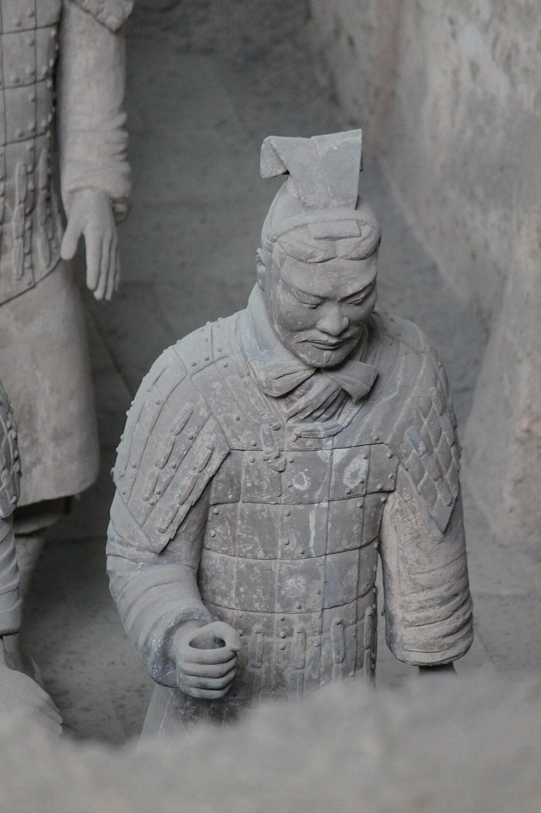
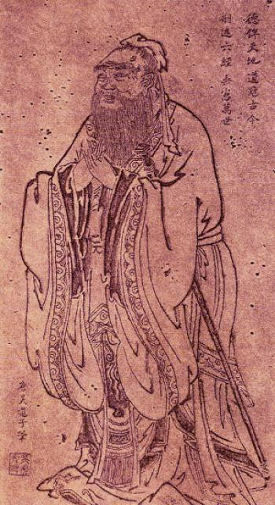
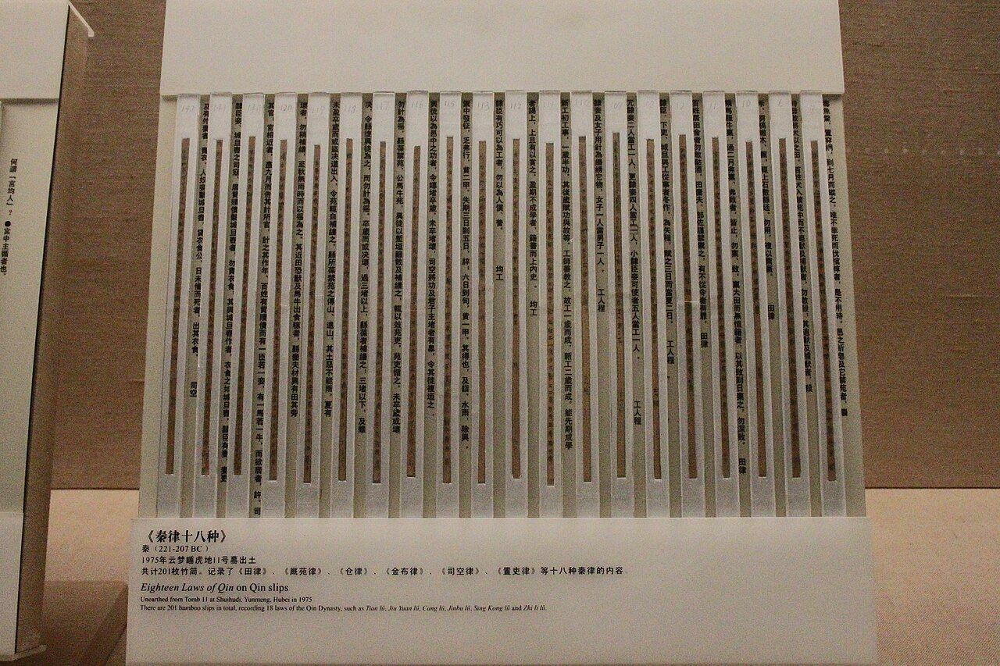
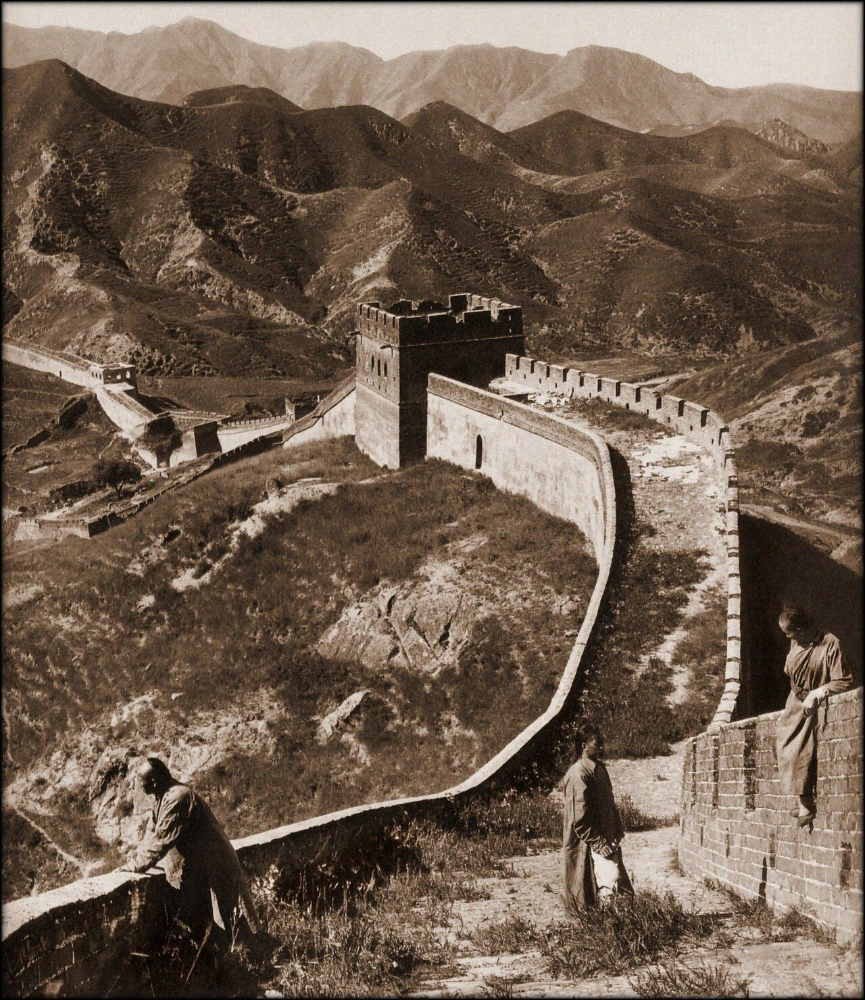

사진 · 진 시황릉 병마용
중학교 역사① · 2단원 문명의 발생과 고대 세계의 형성
통일중국 고대 국가와 제자백가, 진·한
진 시황릉 병마용 1호 갱 · 사진 Gary Lee Todd · CC0
“어지러운 세상을
어지러운 세상을
어떻게 바로잡을까?
사실500년 넘게 이어진 싸움
해석사상가들의 처방
확장나는 어느 처방을 고를까
770 → 221
사실춘추·전국 시대
해석주 왕실이 힘을 잃자
확장철제 농기구와 무기

사진 · 어진 마음과 예절로
다스린다면?
어진 마음과 예절로
다스린다면?
사실공자, 『논어』
해석왕부터 바르게
확장이 얼굴은 진짜일까
공자상(전 오도자 그림의 탁본) · 퍼블릭 도메인
어떻게 다스릴까?
유가어진 마음과 예
법가엄한 법과 상벌
도가억지로 하지 않기
묵가차별 없는 사랑

사진 · 법을 촘촘히 쓰면
세상이 바로잡힐까?
법을 촘촘히 쓰면
세상이 바로잡힐까?
사실진의 법률을 적은 죽간
해석법가를 고른 나라
확장너무 엄한 법
진의 법률을 적은 죽간(수호지 진간) · 사진 Gary Todd · CC0
진 시황의 통일
문자같은 글자
화폐같은 돈
도량형같은 자·되·저울
수레같은 바퀴 폭

사진 · 장성은 누구를 막고,
누구를 부렸을까?
장성은 누구를 막고,
누구를 부렸을까?
사실북쪽의 유목민
해석동원된 백성
확장지금 보는 장성은 언제 쌓았을까
허버트 폰팅, 만리장성(1907) · 복원 ralph repo · CC BY 2.0
분서갱유
누가사마천의 『사기』
언제진이 망한 뒤 한나라 때
사실·주장얼마나 사실일까
진 15년, 한 400년
사실진은 15년 만에 무너졌다
해석한은 무엇을 바꾸었을까
확장‘한자’, ‘한족’이라는 이름
사마천
사실궁형을 당하고도 끝까지 쓴 『사기』
해석왜 포기하지 않았을까
확장역사가의 책임
“어지러운 세상을 바로잡는 길은 이다.